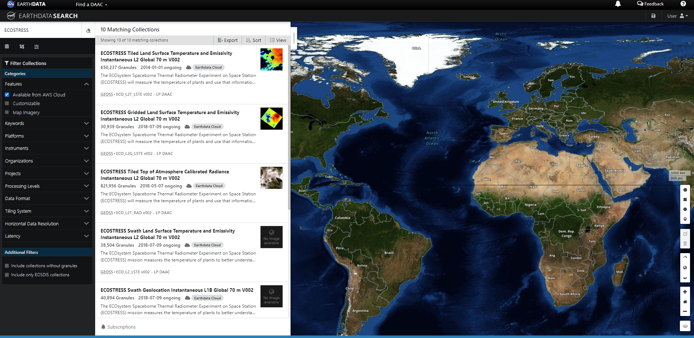
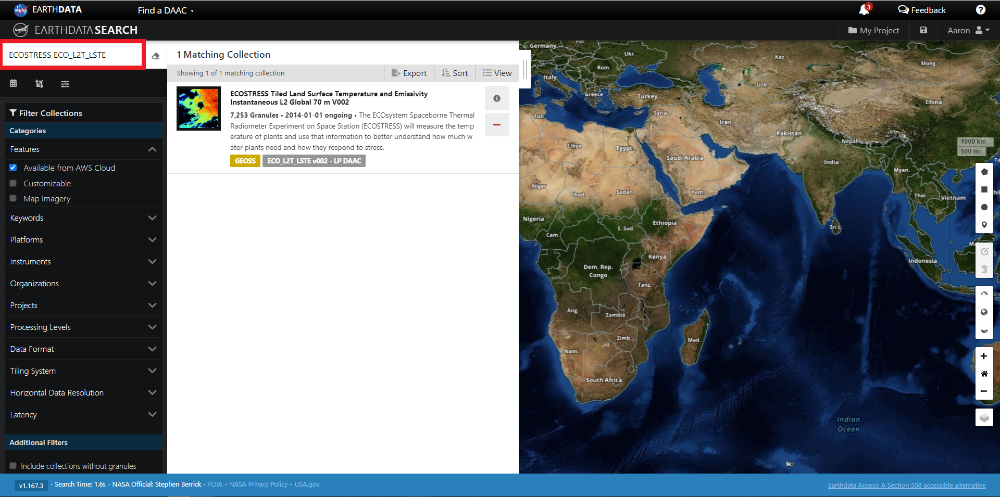
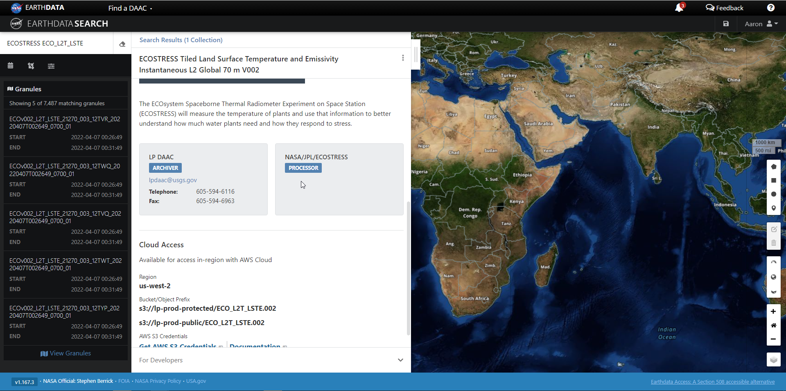
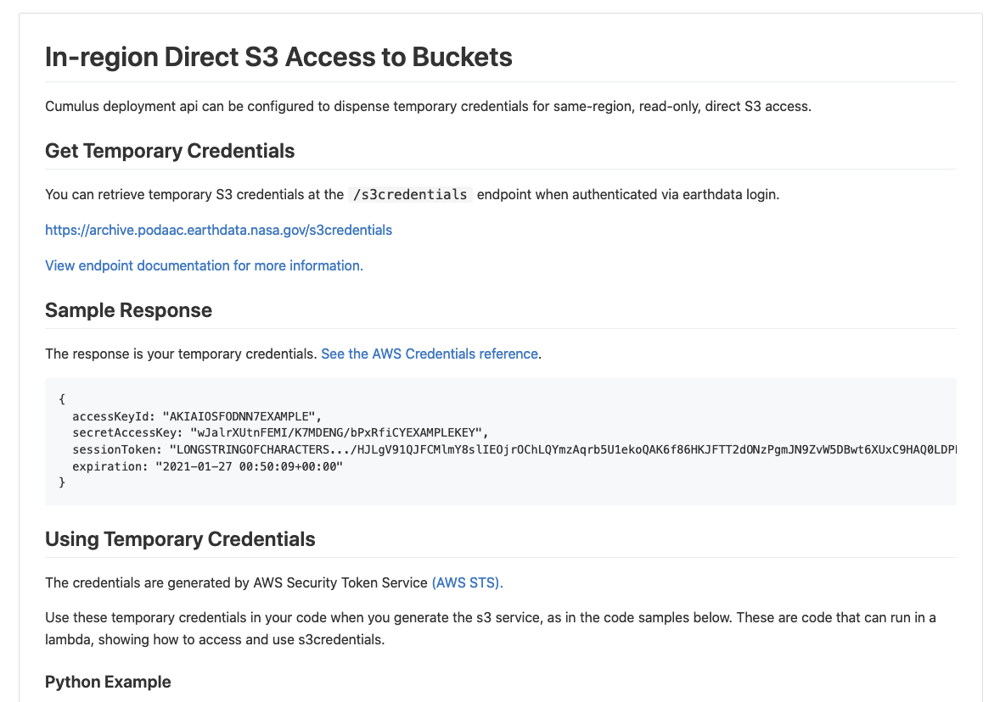
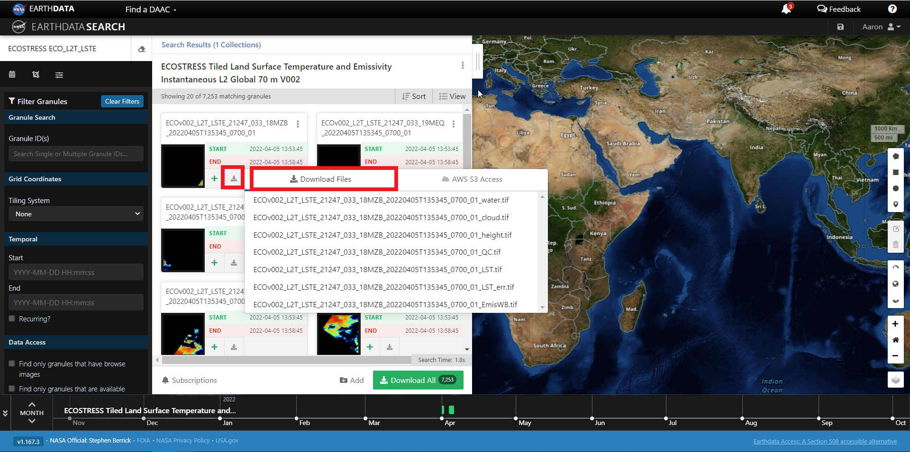
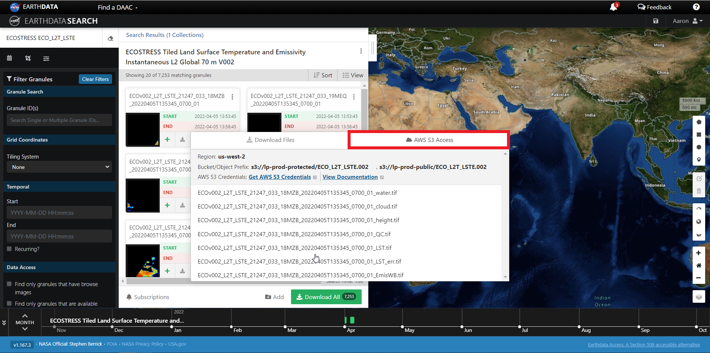
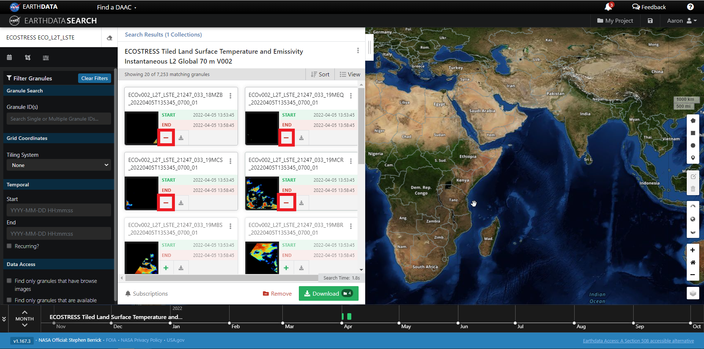
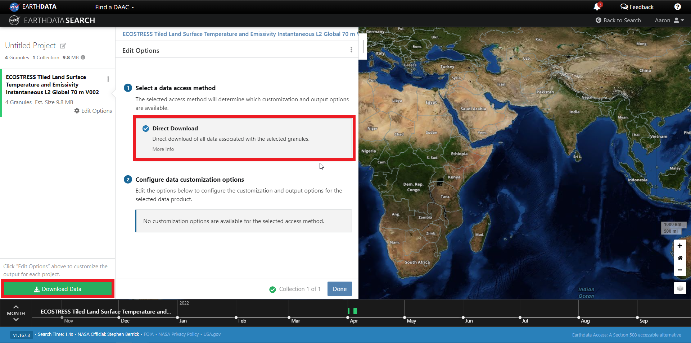
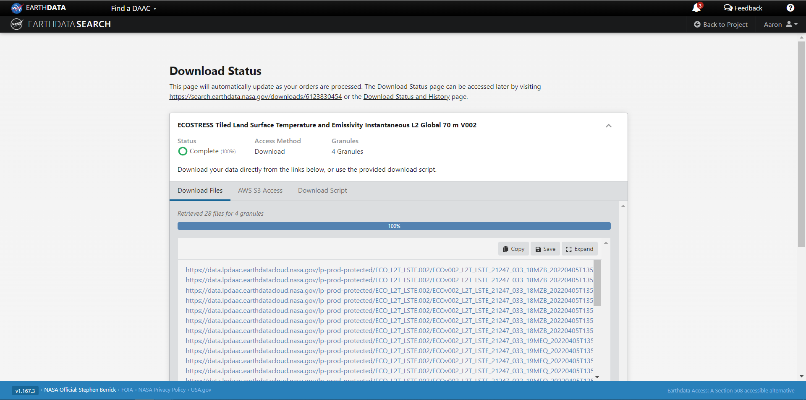
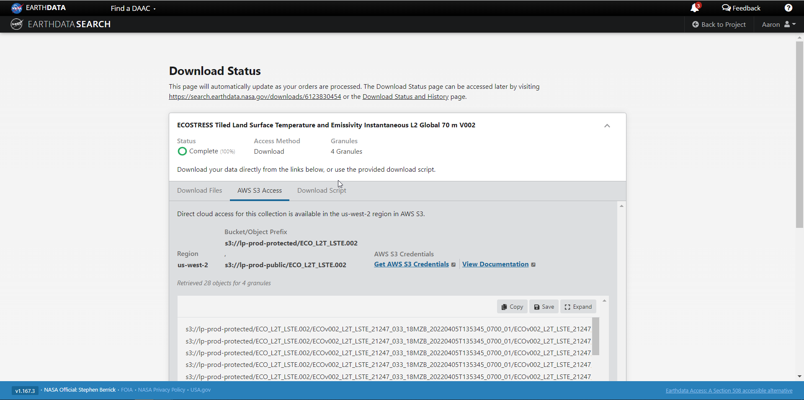

Earthdata Search
This tutorial guides you through how to use Earthdata Search for NASA Earth observations search and discovery, and how to connect the search output (e.g. download or access links) to a programmatic workflow (locally or from within the cloud).
Step 1. Go to Earthdata Search and Login
Go to Earthdata Search https://search.earthdata.nasa.gov and use your Earthdata login credentials to log in. If you do not have an Earthdata account, please see the Workshop Prerequisites for guidance.
Step 2. Search for dataset of interest
Use the search box in the upper left to type key words. In this example we are interested in the ECOSTRESS LSTE which is managed by the LP DAAC and made available from the NASA Earthdata Cloud archive hosted in AWS cloud.
Type ECOSTRESS in the search bar, then click on the “Available from AWS Cloud” filter option on the left.

Let’s refine our search further. Now, let’s search for ECOSTRESS ECO_L2T_LSTE in the search box. A single Earthdata Search Collection is returned.
Click on the (i) icon for the dataset to read more details, including the dataset shortname (helpful for programmatic workflows) just below the dataset name; here ECO_L2T_LSTE.

Step 3. Explore the dataset details, including Cloud Access information
Once we click the (i), scrolling down the info page for the dataset we will see Cloud Access information, such as:
- whether the dataset is available in the cloud
- the cloud Region (all NASA Earthdata Cloud data is/will be in
us-west-2region)
- the S3 storage bucket and object prefix where this data is located
- link that generates AWS S3 Credentials for in-cloud data access (we will cover this in the Direct Data Access Tutorials)
- link to documentation describing the In-region Direct S3 Access to Buckets. Note: these will be unique depending on the DAAC where the data is archived. (We will show examples of direct in-region access in Tutorial 3.)


Note: Clicking on “For Developers” to expand will provide programmatic endpoints such as those for the CMR API, and more.
For now, let’s say we are interested in getting download link(s) or access link(s) for specific data files (granules) within this collection.
At the top of the dataset info section, click on Search Results, which will take us back to the list of datasets matching our search parameters. Clicking on the dataset (ECOSTRESS ECO_L2T_LSTE) displaying a list of files (granules) that are part of the dataset (collection).
Step 4a. Download or data access for a single granule
To download files for a granule click the download arrow on the card (or list row)

You can also get the S3 information (e.g., AWS region, bucket, temperary credentials for S3 access, and file names) by selecting the AWS S3 Access tab.

Step 4b. Download or data access for multiple granule
To download multiple granules, click on the green + symbol to add files to our project. Click on the green button towards the bottom that says “Download”. This will take us to another page with options to customize our download or access link(s).

On the next page click the Direct Download option and click the green Download Data on the bottom left side of the page.

We’re now taken to the final page for instructions to download and links for data access in the cloud. You should see three tabs: Download Files, AWS S3 Access, Download Script:


The Download Files tab provides the https:// links for downloading the files locally
The AWS S3 Access tab provides the S3:// links, which is what we would use to access the data directly in-region (us-west-2) within the AWS cloud.